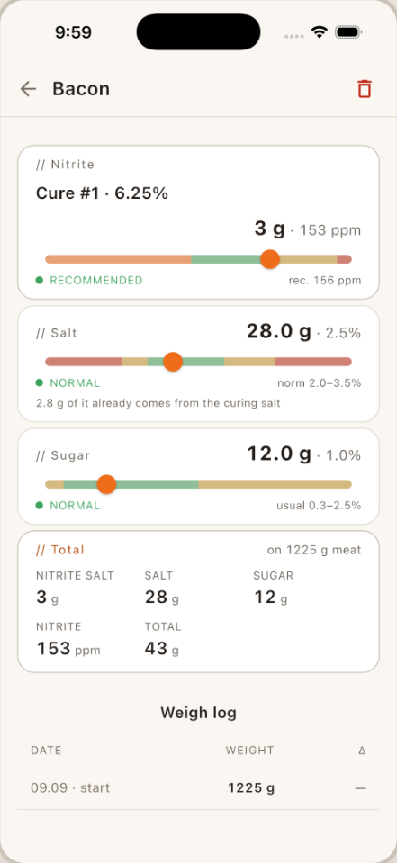

SaltCure
Рабі дома бекон, панчэту, білтонг, джэркі і салямі — без варажбы з соллю.
SaltCure — гэта калькулятар пасолу і журнал партый у адным: лічыць пасол да грама, вядзе кожную партыю з першага дня да гатоўнасці і праводзіць пачаткоўца праз яго першы бекон без спецыяльнага абсталявання.
Паспрабуй калькулятар у браўзеры


Тры рэчы, якія ён робіць
Калькулятар сухога і мокрага пасолу
Раўнаважнае дазаванне ў працэнтах для абодвух метадаў, у грамах або ўнцыях, °C або °F. Мяняеш вагу мяса — услед мяняюцца ўсе лічбы.
Твая нітрытная соль — з праверкай
Cure #1, Cure #2, peklosól, NPS або свой працэнт — доза правяраецца па ліміце USDA/FSIS. Амерыканскія калькулятары зыходзяць з аднаго стандарту; гэты — не.
Журнал для кожнай партыі
Дні і напаміны, страта вагі супраць мэтавага дыяпазону, фота і ацэнка, калі партыя гатовая.
Рэцэпты для старту
Рэцэпты для пачаткоўцаў са складанасцю і тэрмінамі — каб першаму бекону не спатрэбіліся ні спецабсталяванне, ні гутарка на форуме.
Унутры праграмы


Калькулятары на meat.mordansoft.com
Той самы рухавік разліку, што ў праграме, — без усталявання і без акаўнта.
Адкуль бяруцца лічбы
Кожны ліміт нітрыту ў SaltCure заснаваны на апублікаваным правіле USDA/FSIS, і доза паказана побач са сваім лімітам.
- Бекон: да 200 ppm нітрыту пры сухім пасоле і 120 ppm у расоле — 9 CFR 424.22(b).
- Іншае саленае мяса: да 625 ppm на ўваходзе для цэлага кавалка сухога пасолу (не больш за 200 ppm у гатовым прадукце), 156 ppm для рубленага мяса — 9 CFR 424.21(c). Для джэркі SaltCure свядома ўжывае больш строгія 156 ppm.
- Нітрат (Cure #2) у беконе не дазволены, таму праграма там яго блакуе. Доза нітрыту заўсёды акругляецца ўніз, ніколі не ўверх.
- Гэтыя правілы напісаныя для прамысловых прадпрыемстваў, а не для хатняй кухні. Мы бярэм іх як найлепшы публічны лікавы арыенцір; вынік — не адабрэнне і не гарантыя, адказнасць за гатовы прадукт застаецца на табе.
Пытанні пра нітрыт і бяспеку
Чаму доза нітрыту такая важная?
Нітрыт у нітрытнай солі разам з соллю і холадам стрымлівае рост C. botulinum у саленым мясе і замацоўвае колер. Гэта не гарантыя, а лішак нітрыту шкодны. Таму дозу важаць на вагах з дакладнасцю 0,1 г, а не мераюць лыжкай. SaltCure лічыць дозу ў грамах ад вагі мяса (для мокрага пасолу — ад вагі вады).
Якія ліміты выкарыстоўвае SaltCure?
SaltCure лічыць паводле апублікаваных правілаў USDA/FSIS (9 CFR 424.21 і 424.22). Для бекону мяжа — 200 ppm нітрыту пры сухім пасоле і 120 ppm у расоле; для рубленага мяса — 156 ppm. Для джэркі з цэлай мышцы SaltCure свядома ўжывае той самы больш строгі ліміт 156 ppm. Доза па змаўчанні — 156 ppm для сухога бекону і 120 ppm для расолу. Гэтыя правілы напісаныя для прамысловых прадпрыемстваў, а не для хатняй кухні. Мы бярэм іх як найлепшы публічны лікавы арыенцір, а адказнасць за гатовы прадукт застаецца на табе.
Cure #1, Cure #2 ці еўрапейская нітрытная соль — у чым розніца?
Cure #1 змяшчае 6,25% нітрыту натрыю. Cure #2 змяшчае яшчэ і нітрат натрыю і патрэбная для доўгага вялення без тэрмаапрацоўкі. Еўрапейская нітрытная соль (Pökelsalz, peklosól) звычайна змяшчае толькі 0,4–0,6% нітрыту — прыкладна ў дзесяць разоў менш. Калі абраць не той тып, доза памыліцца прыкладна ў дзесяць разоў, таму SaltCure спачатку пытаецца, якая ў цябе соль, і дае ўвесці дакладны працэнт нітрыту з пачка.
Ці можна выкарыстоўваць Cure #2 для бекону?
Не. Правілы USDA не дазваляюць дададзены нітрат у беконе, таму SaltCure цалкам блакуе Cure #2 для бекону.
Ці дастаткова проста высушыць джэркі?
Не. Для джэркі галоўная рызыка — бактэрыі, а не нітрыт. Рэкамендацыя FSIS: да сушкі прагрэць мяса да 160 °F (71 °C), птушку да 165 °F (74 °C) у вільготным асяроддзі, потым сушыць прыкладна пры 130–140 °F (54–60 °C).
Як зразумець, што партыя сапсавалася?
На доўгім сухім вяленні цэлых кавалкаў (панчэта, копа) белая пухнатая цвіль — норма. Любая іншая цвіль — зялёная, чорная ці якая-небудзь яшчэ — або слізкая паверхня азначае, што ўсю партыю трэба выкінуць. На іншых прадуктах (бекон, джэркі, усё, што не вяліцца тыднямі) любая цвіль — падстава выкінуць. Чысты выгляд не даказвае, што мяса ў парадку. Сумняваешся — выкідай.
Падрабязней, з крыніцай для кожнай лічбы: што такое нітрытная соль, што нітрыт робіць у мясе, якія дозы небяспечныя і на якіх правілах пабудаваны SaltCure (па-англійску).
Ад канцэпту да рэлізу ў крамах
Кантэкст
Уласны прадукт MordanSoft у нішы хатняга пасолу і шаркютры. У існуючых праграм у гэтай катэгорыі амаль няма водгукаў — гэта пакінула свабодным уваход у нішу.
Што мы зрабілі
Дызайн, рэалізацыя на Flutter, рухавік дазавання з праверкай ліміту FSIS, журнал партый з напамінамі, экраны першага запуску і рэліз у Google Play і App Store.
Стэк
Без падвоху. Без падпіскі.
SaltCure працуе афлайн, захоўвае твае партыі на тэлефоне і не просіць акаўнт.